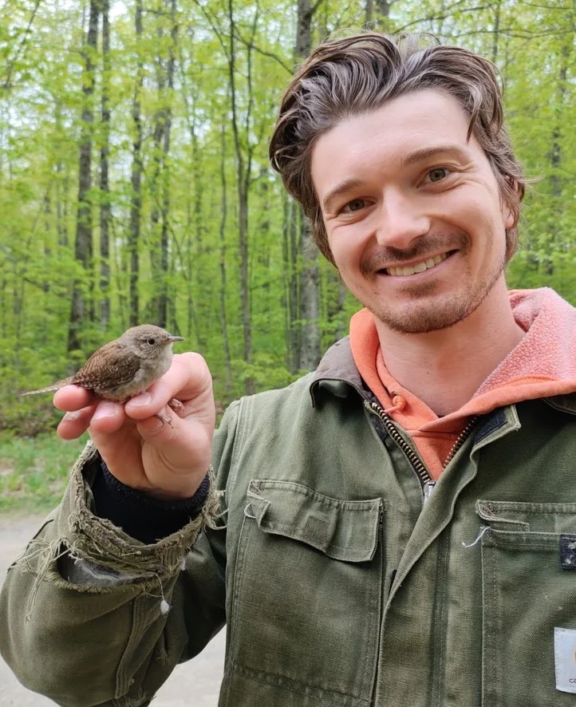
Tanner Barnes
PhD student
Experimental manipulation of hibernacula microclimates, white-nose syndrome, and bat resilience.
People
Field ecology, quantitative modeling, engineering, and conservation come together across the lab’s tropical, migratory, and wildlife-health research.
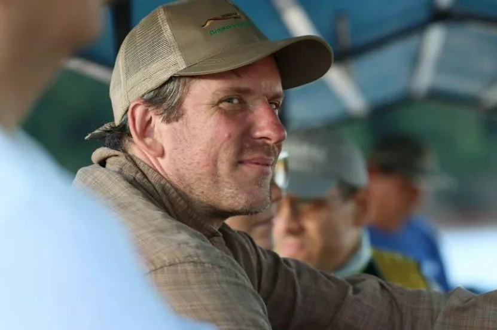
Principal investigator
Assistant Professor · Michigan Technological University
Jared is a wildlife ecologist whose work connects detailed natural history with long-term demographic studies. His research spans tropical bird responses to climate change, migration and habitat quality, wildlife disease, molt, and the development of field methods used by ornithologists around the world.
College of Forest Resources & Environmental Science
Michigan Technological University
Graduate students, postdoctoral researchers, and visiting scholars bring complementary perspectives to questions spanning tropical forests, the Great Lakes, and northern wildlife systems.

PhD student
Experimental manipulation of hibernacula microclimates, white-nose syndrome, and bat resilience.
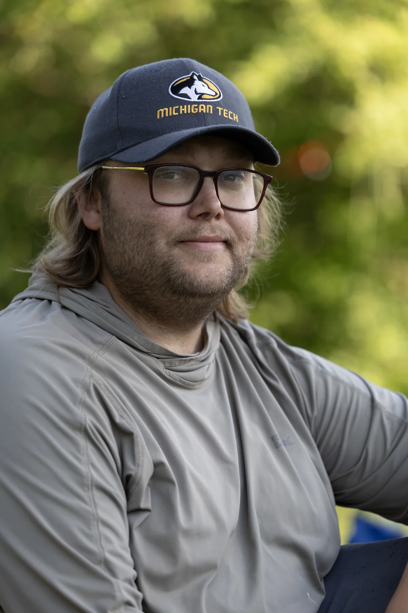
PhD student
Multi-scale drivers of migratory bird habitat selection using forest structure, acoustics, and remote sensing.
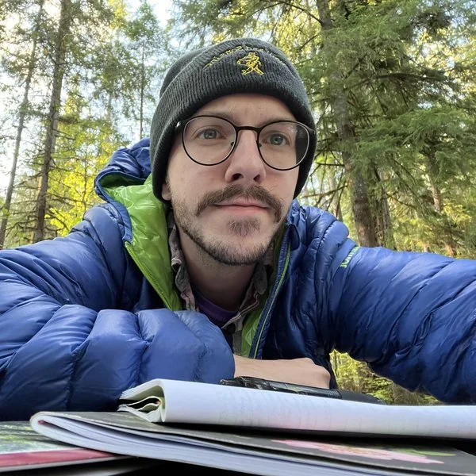
Postdoctoral researcher · Co-sponsored with David Luther
Climate change, environmental degradation, and tropical bird demography.
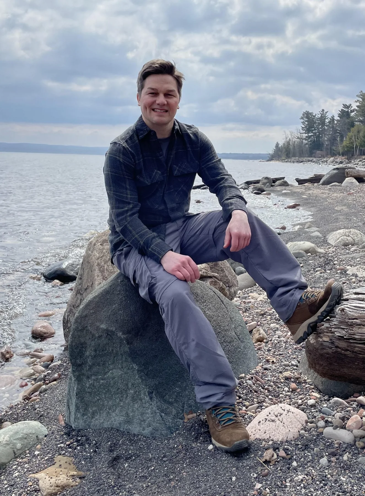
PhD student · Co-advised with Jeremy Bos
Low-cost autonomous thermal and lidar systems for monitoring and managing bat hibernacula.
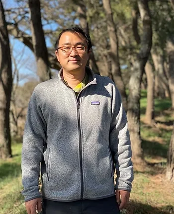
Visiting Professor · Gyeongsang National University
Ecological drivers of songbird habitat quality across the avian lifecycle.
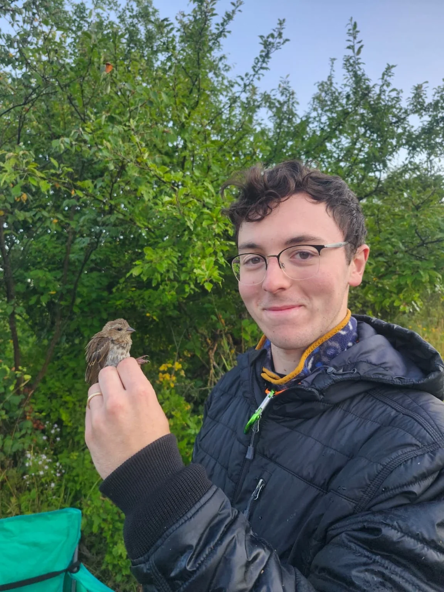
MSc student · Co-advised with Christopher Webster
Winter roost ecology and field investigation of expanding Wild Turkey populations in the Keweenaw Peninsula.
Students at partner universities whose graduate research Jared co-advises or supports as a committee member.
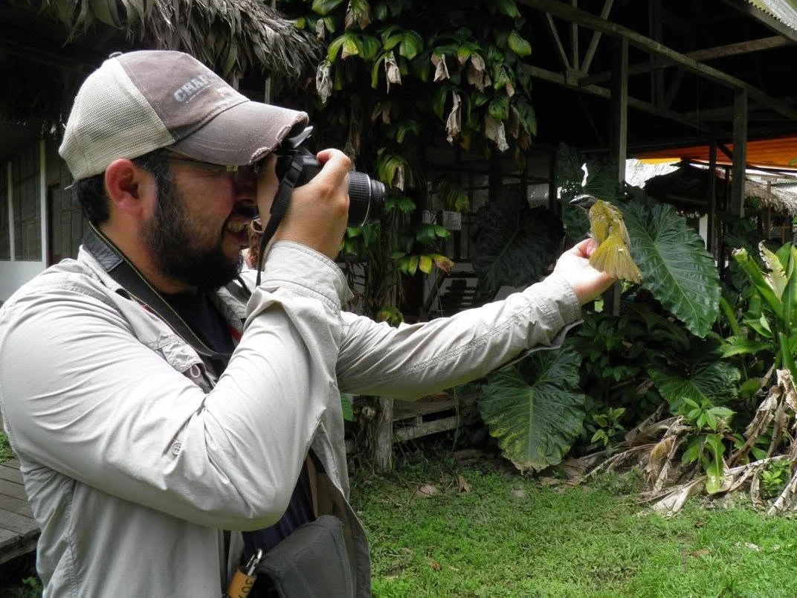
PhD student · Universidad Nacional de Río Cuarto, Argentina
Co-advised with Pablo Brandolín. Research on Neotropical bird ecology, banding, molt, and demographic monitoring across South America.
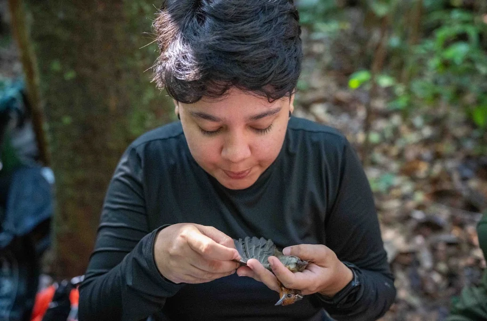
PhD student · Universidade Federal do Amazonas, Brazil
Advised by Cíntia Cornelius Frische; Jared serves on her committee. Research on Amazonian birds and the IRRIGA experimental rainfall manipulation.
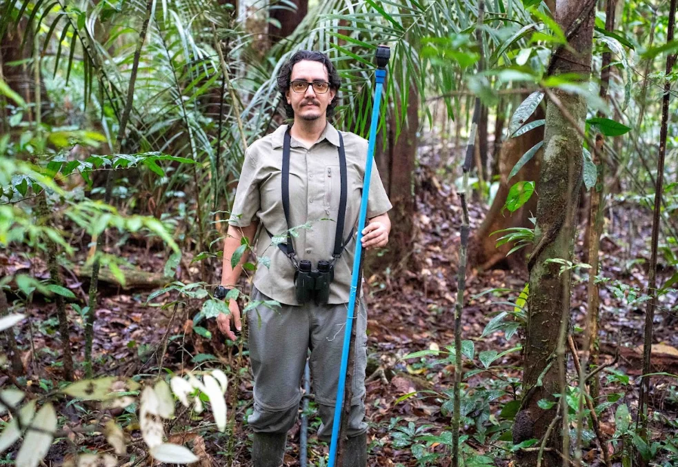
PhD student · Universidade Federal do Amazonas, Brazil
Co-advised with Cíntia Cornelius Frische. Research on tropical bird demography and population responses to environmental change.
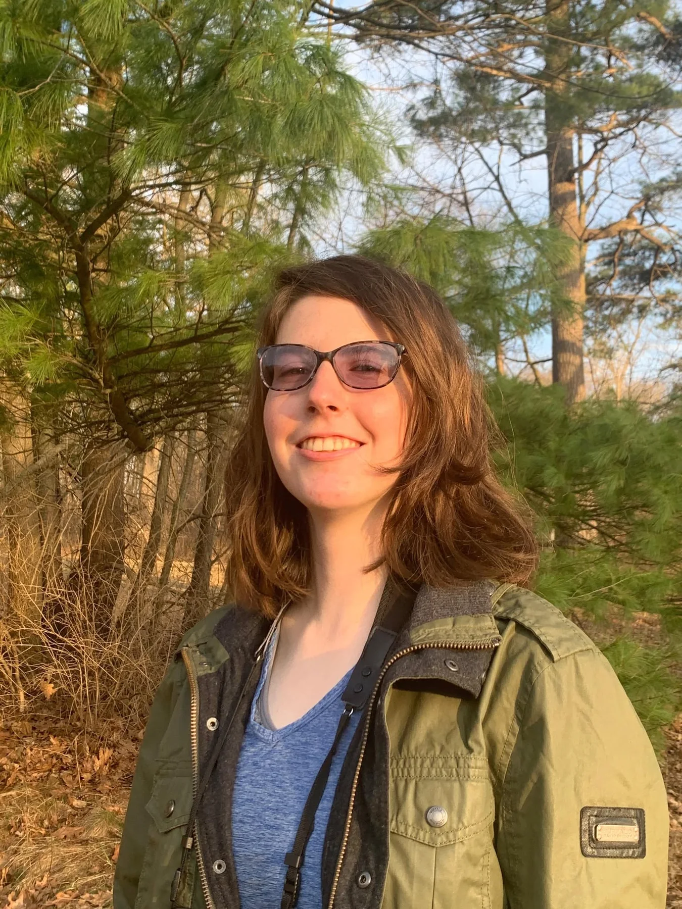
PhD student · University of Delaware
Advised by Jeff Buler; Jared serves on her committee. Research on seasonal variation in migratory stopover habitat use and value.
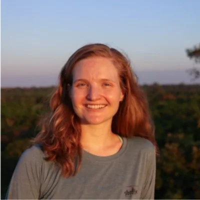
PhD student · George Mason University
Advised by David Luther; Jared serves on her committee. Research on how forest fragmentation and climate affect Amazonian bird breeding behavior and reproductive success.
Former students continue applying field ecology, technology, and conservation science in research and practice.
We welcome inquiries from students interested in wildlife ecology, field biology, quantitative methods, and collaborative conservation. Available positions vary with project funding.
Get in touch